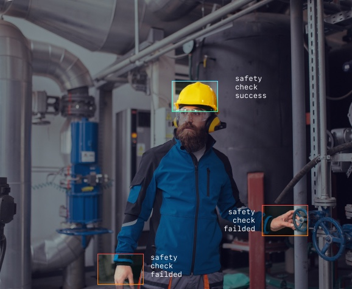

Products
Recognition and authentication of personal documents
Read data of customer documents automatically.
FelisLabs document recognition service processes voluminous packages of personal documents using artificial neural networks. The system extracts information from the passport in 0.4 seconds and verifies the authenticity of the documents. You reduce staff involvement in digitizing documents and minimize the possibility of error
Let's tryRecognition of license plates identification
Identify car numbers in the traffic flow in real time and on video recordings
The car license plate recognition system captures the license plate in the car traffic and helps to control the access of cars to service facilities and parking lots. The AI algorithm reads the machine number and compares it with the database. If the driver of the car violates traffic rules or performs dangerous maneuvers, the system saves information about the offense to the database and transmits a message to the operator.
Let's try
Customers traffic analysis and customer behaviour
Automate consumers behaviour analytics, measuring queues at retail outlets and evaluate the quality of work of sales departments.
The retail analytics system identifies regular customers in the customer flow, determines and remembers consumer preferences, evaluates the availability of goods on the shelves, reads customer emotions, records the behavior and speech characteristics of sales consultants. This helps to identify errors in the work of personnel in time, reduce the number of employees for routine tasks, improve customer service and increase sales.
Let's tryProduction safety control
Monitor the work of employees in production 24/7, monitor the correct use of PPE and check how workers comply with safety regulations.
AI algorithms help to automate inspections at work, identify violators of safety regulations, promptly report data on violations to the management of the enterprise. If necessary, an emergency stop of the mechanisms is started. The system monitors the safety of production operations and reduces the negative impact of the human factor.
Let's try Anonymisation of the face protection of car registration data
Protect customer biometrics and vehicle registration data, when you make information publicly available.
The program for anonymizing faces and car numbers blurs people's faces and car registration plates in photos and videos or completely changes them to others so that the faces and numbers do not match the real ones. The FelisLabs AI anonymization system accepts video streams from observation points as input and performs anonymization of people's faces using the Bluer method. The processed data stream is transferred to the business infrastructure.
Let's try

About company
Since 2017, we have been developing solutions in the field of machine learning and helping businesses to increase the pace of digital transformation. Our products are based on artificial intelligence models and computer vision systems created by FelisLabs engineers.
Starting with the recognition of personal documents, today we provide AI algorithms to companies from various fields ‑ from the automotive industry to the banking sector. We automate the processing of tabular data and sales analytics, recognize personal documents with high precision, identify car numbers and people's faces, maintain safety control at work, anonymize biometric parameters and registration data of cars.
Contact us